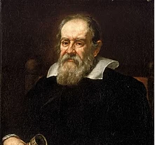

<section class="" id="biografia">
    <div class="hoja">
      <div class="contenido">
        <h2>Biografia</h2> 
        <div class="foto">
          
        </div>
        <div>
          <h3>Galileo Galilei</h3>  
        </div>
        <div>
          <p>Físico y astrónomo italiano. Nació en la ciudad italiana
            de Pisa, el 15 de febrero de 1564. Su contribución más
            famosa a la ciencia fue su descubrimiento sobre las
            mediciones precisas.<br>
            En el campo de la física, descubrió las leyes que rigen la
            caída de los cuerpos y el movimiento de los proyectiles.
            A los diecisiete años, se inscribió en la universidad para
            realizar estudios de medicina, pero no logró terminar
            la carrera, pues su interés estaba puesto en las ciencias
            exactas. Estudió a Euclides y Arquímedes, y además
            de observar la naturaleza, se ocupó de los asuntos
            relacionados con la mecánica.<br>
              Su curiosa mirada atrapaba cuanto ocurría a su
            alrededor, y así fue como las oscilaciones regulares
            de una lámpara colgada en la bóveda de la catedral
            llamaron poderosamente su atención. Esto lo llevó a
            pensar en aplicar el movimiento constante a la medición
            del tiempo.<br>
              Junto con el astrónomo alemán Johannes Kepler, comenzó la revolución científica que
            culminó con la obra del físico inglés Isaac Newton.<br>
              Su principal contribución a la astronomía fue el uso del telescopio para la observación y el
            descubrimiento de las manchas solares, los valles y las montañas lunares, los cuatro satélites
            mayores de Júpiter y las fases de Venus.<br>
            En 1595, Galileo se inclinó por la teoría de Copérnico, que sostenía que la Tierra giraba
            alrededor del Sol desechando el modelo de Aristóteles y Tolomeo en el que los planetas
            giraban alrededor de una Tierra estacionaria.
          </p>
        </div>
      </div>            
    </div>
</section>   
